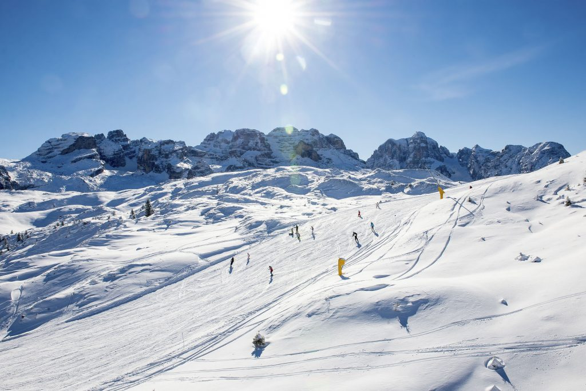
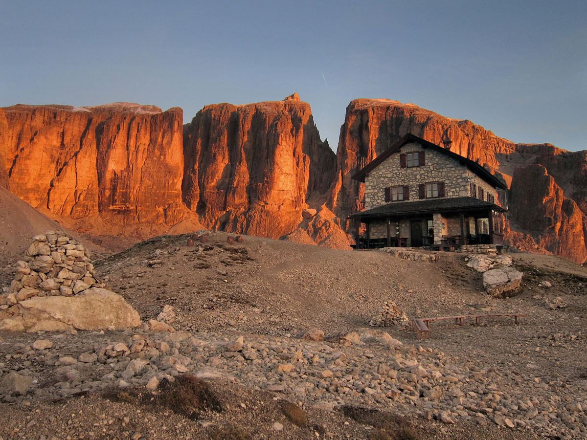
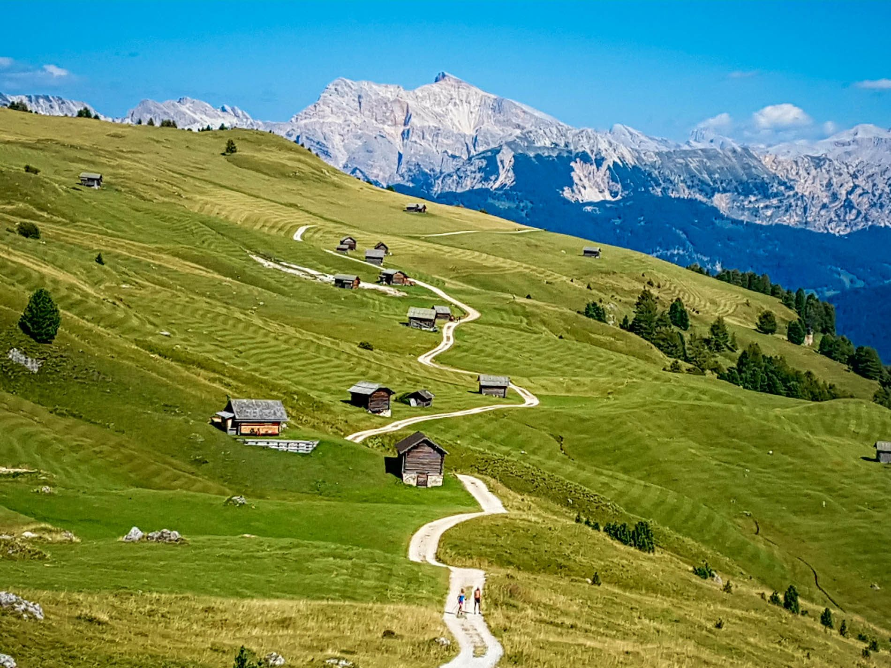
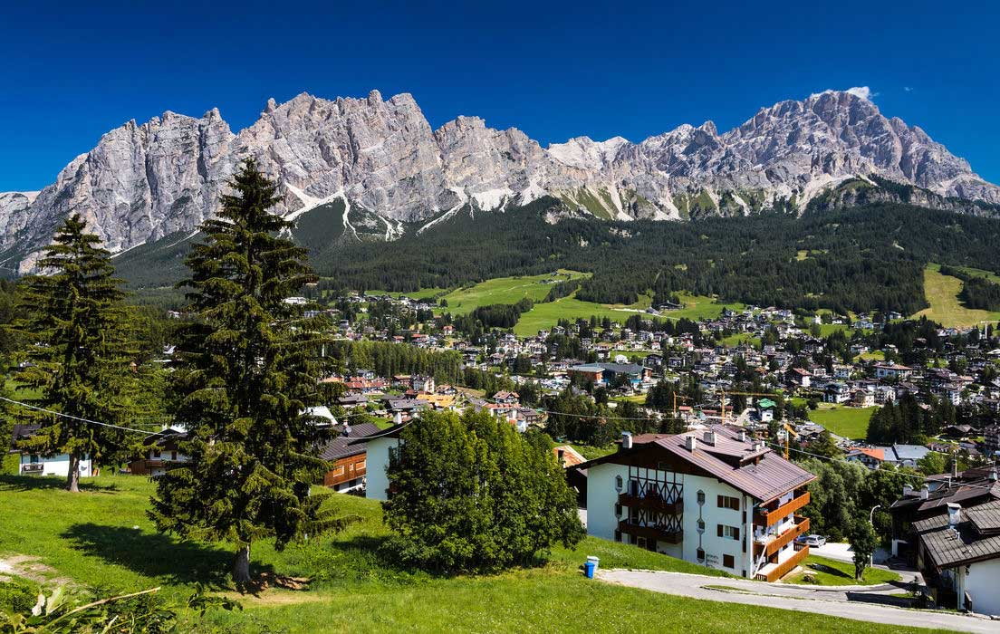
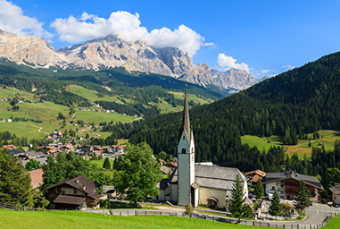
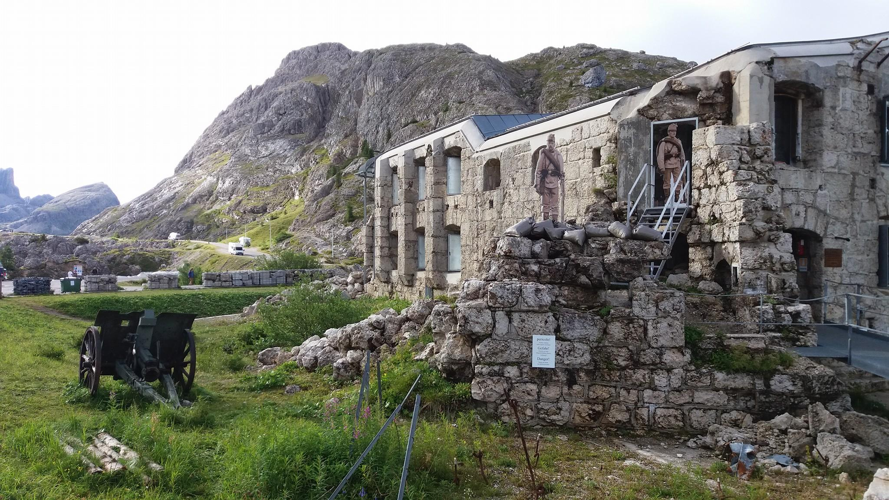

Le Dolomiti, specialmente nella loro parte settentrionale e occidentale, sono intensamente sfruttate ad uso turistico. In particolare le valli delle Province di Trento e Bolzano e la parte alta della Provincia di Belluno basano la propria economia sulla pratica invernale dello sci alpino divenuto popolare con le Olimpiadi Invernali di Cortina del 1956.
L'estate è invece il tempo dei trekking e delle scalate, turismo, questo, che viene praticato sull'intera area. Le Dolomiti vantano una lunga tradizione escursionistica e alpinistica che nel corso del '900 ha dotato molte montagne di una via di salita segnalata e spesso ferrata per facilitarne l'accesso.
 Alcune delle località di villeggiatura presenti nelle valli dolomitiche più conosciute sono Cortina d'Ampezzo, Corvara, San Cassiano, Badia e La Villa
 Un altro tipo di turismo è rappresentato dai luoghi legati ai combattimenti del fronte italiano della prima guerra mondiale: tra questi ricordiamo il Pasubio nelle Piccole Dolomiti (Strada delle 52 gallerie e Dente Italiano) e il museo del Lagazuoi, nella provincia di Cortina d'Ampezzo.
